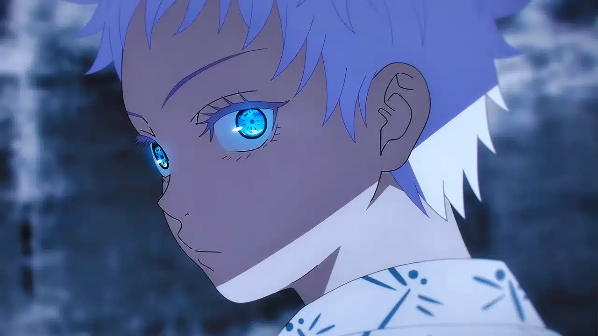

Satoru Gojo
O feiticeiro mais forte da era moderna,
Sobre
Satoru Gojo: o feiticeiro mais forte da era Satoru Gojo é um dos personagens principais de Jujutsu Kaisen, conhecido como o feiticeiro mais forte do mundo. Ele é um feiticeiro jujutsu de classe especial e é o orgulho do Clã Gojo, a primeira pessoa a herdar ambos o Ilimitado e os Seis Olhos em quatrocentos anos. Gojo é um professor na Escola Jujutsu de Tóquio e usa sua influência para proteger e treinar jovens aliados fortes. Ele é um homem alto, magro e musculoso, com cabelos brancos e os Seis Olhos, que são de uma cor azul vibrante. Gojo usa uma jaqueta azul-escura, calças pretas e botas sociais pretas. Ele é conhecido por ser "boa com quem gosta e ruim com quem não vai com a cara" e por ser sarcástico e cruel com seus inimigos. Gojo é um exército de um homem só, com reflexos e velocidade invejáveis, além de ser um mestre no combate corpo-a-corpo e uma força bruta imensa.
Aparência
aparência gojo de jujutsu Satoru Gojo é descrito como um homem alto, magro e musculoso, com cabelos brancos e os Seis Olhos, que são de uma cor azul vibrante. Ele geralmente usa uma venda preta para cobrir os olhos, o que dá uma aparência mais espetada. Quando em roupas casuais, Gojo solta seu cabelo até a base do pescoço e usa óculos escuros. Durante o Arco Batalha em Shinjuku, Gojo não usou sua venda, deixando seu cabelo cair e mostrando os olhos.
Técnica
Técnicas Gojo de Jujutsu Satoru Gojo, um dos personagens principais do anime/mangá Jujutsu Kaisen, é conhecido por suas habilidades excepcionais e técnicas amaldiçoadas. Ele possui uma técnica hereditária chamada "Limitless" (Ilimitado), que permite manipular o espaço ao seu redor com energia amaldiçoada. Gojo também herdou "Six Eyes" (Seis Olhos), que aumenta sua percepção e poder, permitindo-lhe antecipar movimentos e reagir rapidamente. Suas técnicas incluem o "Cursed Technique Lapse: Blue" e o "Cursed Technique Reversal: Red", que são exemplos de como Gojo utiliza suas habilidades para criar efeitos avançados e desacelerar tudo que se aproxima de seu corpo.
Principais Habilidades e Técnicas:
- Infinito (Mugen): Cria uma barreira invisível que desacelera infinitamente qualquer ataque, tornando-o intocável.
- Lapso de Técnica Amaldiçoada: Azul: Amplifica o infinito para criar atração magnética, capaz de colapsar estruturas.
- Técnica Amaldiçoada Reversa: Vermelho: Cria repulsão intensa, força oposta ao Azul, capaz de repelir com imensa energia.
- Técnica Imaginária: Roxo: Combinação de Azul e Vermelho, criando um colapso de matéria que apaga tudo em seu caminho.
- Vazio Infinito (Expansão de Domínio): Prende inimigos em um espaço vazio, forçando-os a processar informações infinitas, o que paralisa o cérebro.
- Seis Olhos (Rikugan): Habilidade ocular que permite enxergar energia amaldiçoada em detalhes atômicos, permitindo uso quase nulo de energia amaldiçoada.
- Técnica Amaldiçoada Reversa: Usada para cura automática e para energizar o "Vermelho".
- Teletransporte: Manipulação do espaço para deslocamento instantâneo.
- Fulgor Negro (Kokusen): Aplicação de energia amaldiçoada em curtíssimo intervalo, amplificando o poder do golpe.
Curiosidades
-
1. De onde ele é?
Kyoto. -
2. Gojo às vezes usa o dialeto local de sua cidade natal?
Não é provável. Quando criança, ele era levado para missões como parte do treinamento dos três grandes clãs ou se mudou cedo para Tóquio. -
3. Foi desejo de Gojo ir para o Colégio Técnico de Magia Metropolitana de
Tóquio?
Foi desejo de Gojo, pois ele estava cansado de sua família dominante. -
4. Os pais de Gojo ainda estão vivos?
Estão vivos. Ganharam status mais alto dentro do clã Gojo por terem dado à luz Satoru Gojo, mas não são feiticeiros particularmente fortes. -
5. Gojo é filho único?
Sim. Ele pertence a um dos três grandes clãs e tem muitos parentes, mas devido ao seu tratamento especial não teve interações normais com eles. -
6. Por que ele foi visto sozinho na cidade no capítulo 96?
Ele havia fugido de casa e estava simplesmente vagando. -
7. Ele já lutava contra maldições antes de entrar no colégio?
Sim, ele já tinha bastante experiência em missões. -
8. O uniforme de Gojo é personalizado?
Não muito. Ele usa um uniforme bastante simples. -
9. Gojo tinha uma idol gravure como papel de parede?
Sim, mas parou de usar porque Ieiri achava estranho. -
10. Ele viveu nos dormitórios do colégio?
Sim.